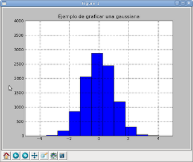

Tutoriales de matplotlib con python. Parte 3 Histograma
Posted on mar 16 junio 2009 in Tutorial Python • 1 min read
Ahora se demostrará como graficar un histograma. El ejemplo que se usará es el de graficar una gaussiana.
>>> from pylab import randn, hist
>>> import matplotlib.pyplot as plt
>>> plt.title("Ejemplo de graficar una gaussiana")
>>> x = randn(10000)
>>> plt.hist(x)
(array([ 26, 182, 846, 2061, 2876, 2449, 1194, 312, 46, 8]), array([-3.56266387, -2.79960319, -2.03654252, -1.27348184, -0.51042117, 0.25263951, 1.01570018, 1.77876086, 2.54182153, 3.30488221, 4.06794288]), )
>>> plt.axis([-5, 5, 0, 4000]) [-5, 5, 0, 4000]
>>> plt.grid(True)
Se importa random e histograma, luego matplotlib. Se define el título de la gráfica, se generan los números aleatorios entre 0 y 10000, se le pasan los datos a matplotlib, se definen los ejes de la gráfica y para finalizar se define cuadros a la gráfica.

===
¡Haz tu donativo! Si te gustó el artículo puedes realizar un donativo con Bitcoin (BTC) usando la billetera digital de tu preferencia a la siguiente dirección: 17MtNybhdkA9GV3UNS6BTwPcuhjXoPrSzV
O Escaneando el código QR desde billetera: